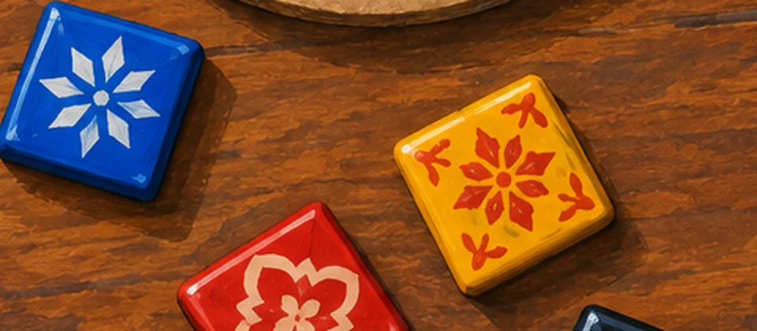
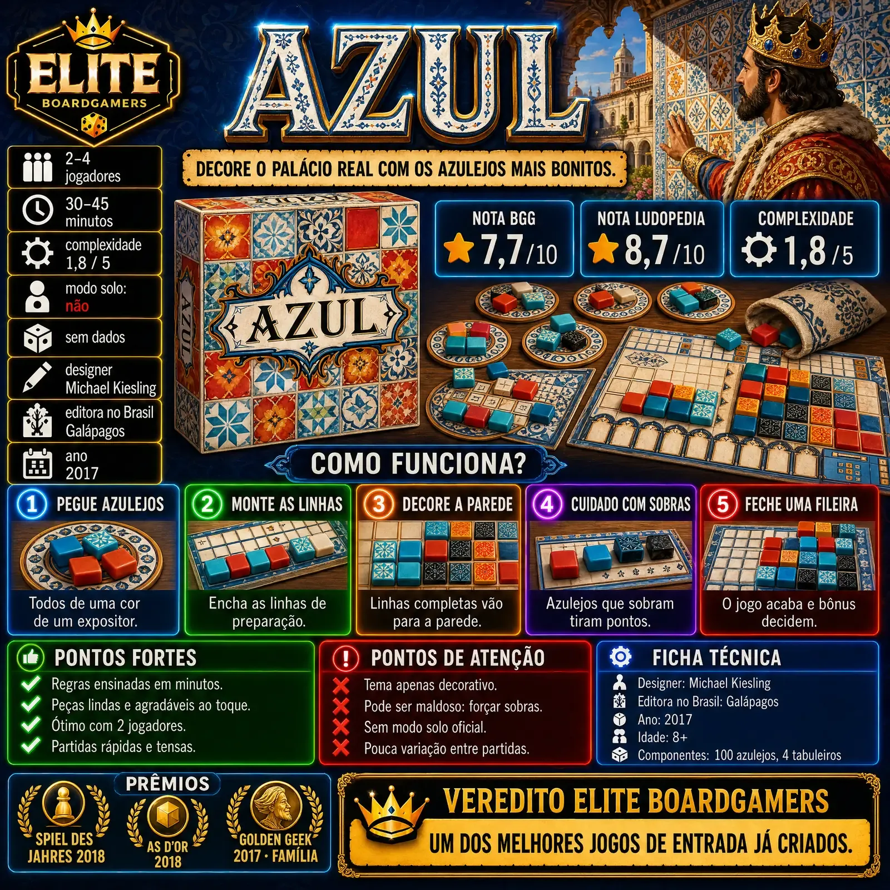
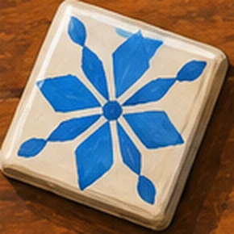
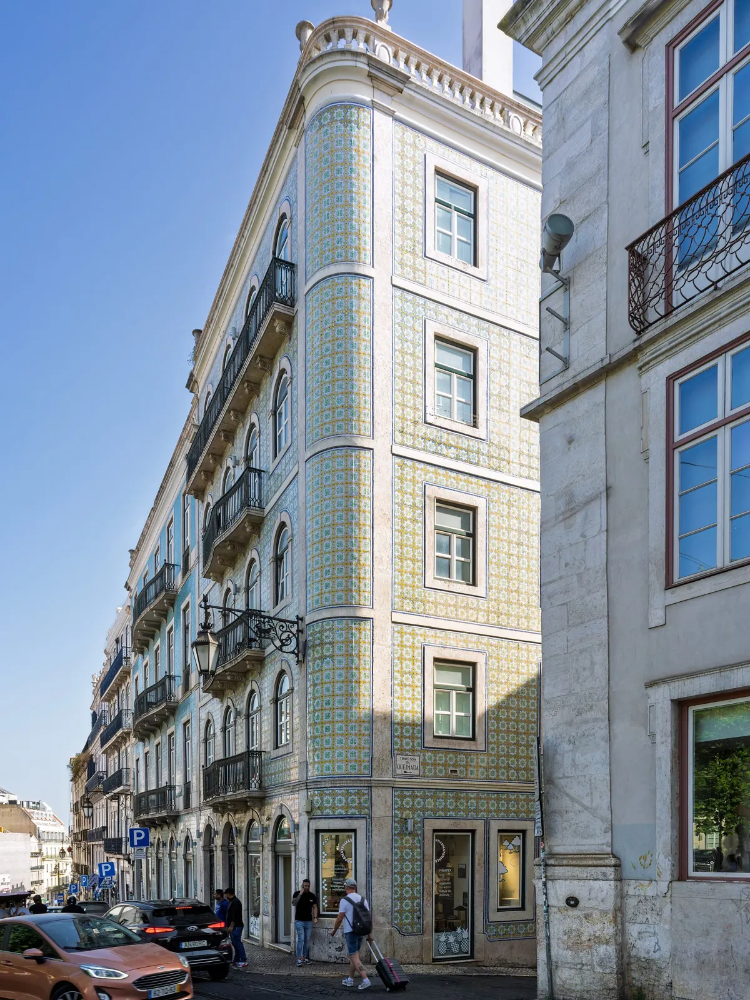
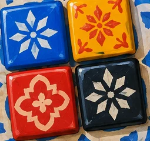
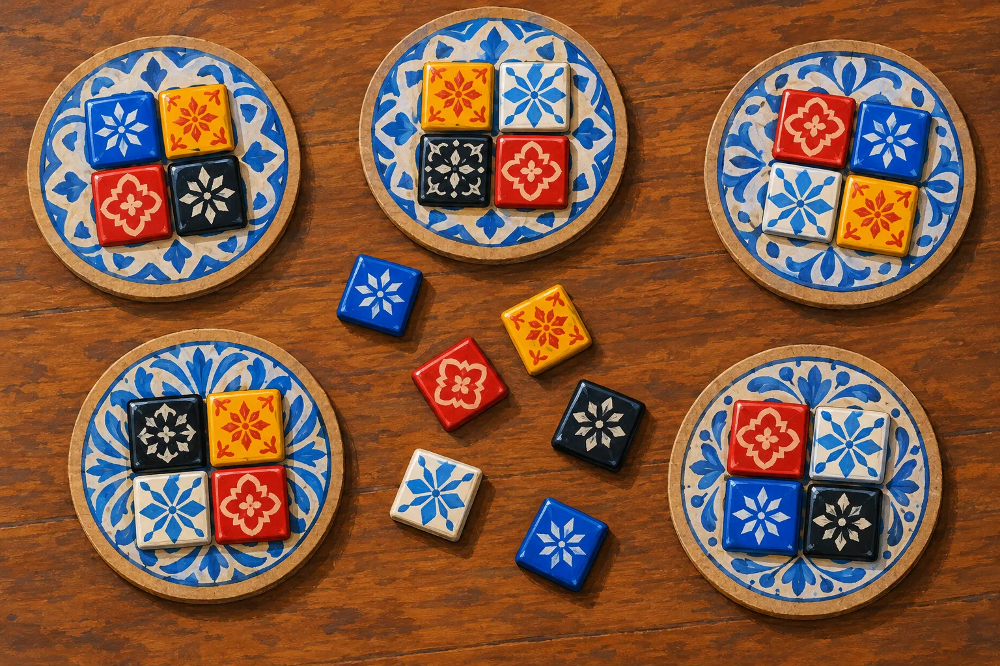
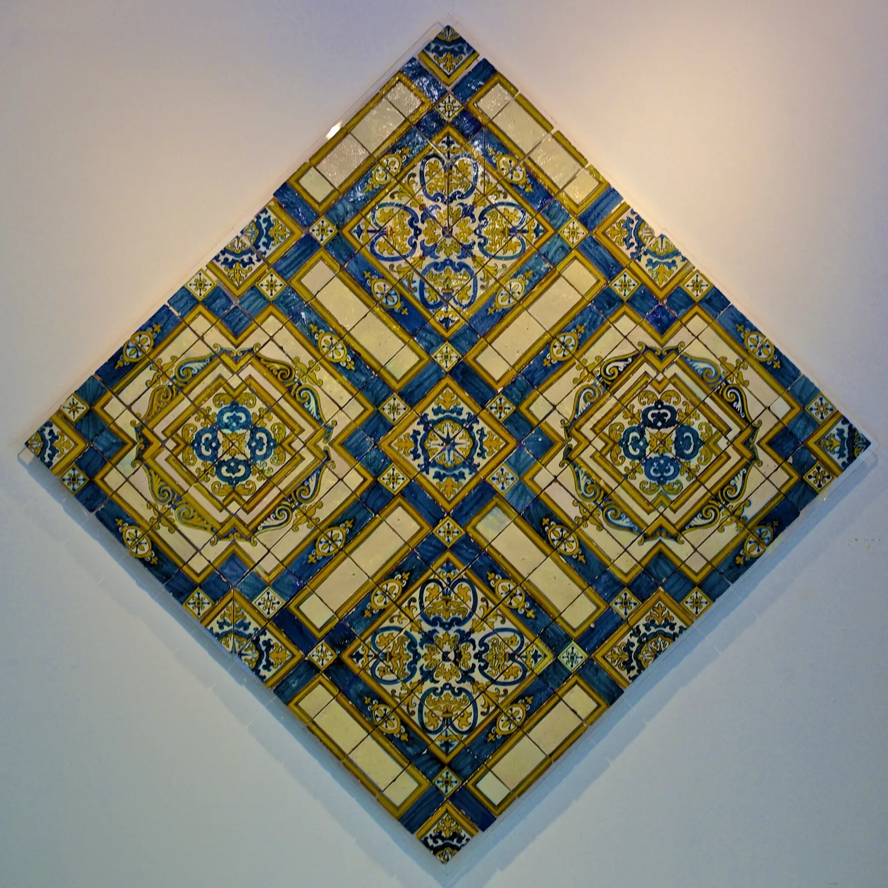
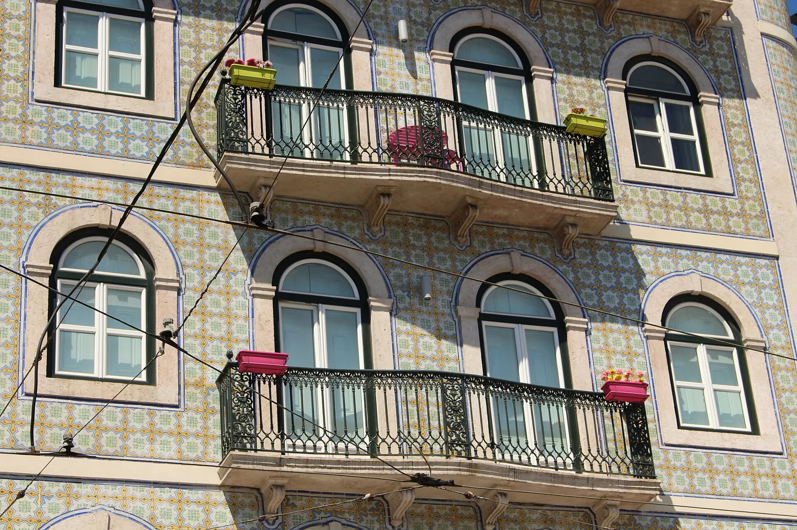
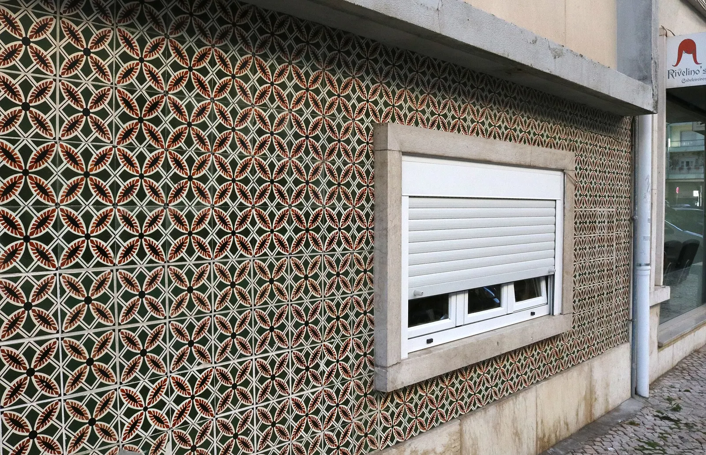
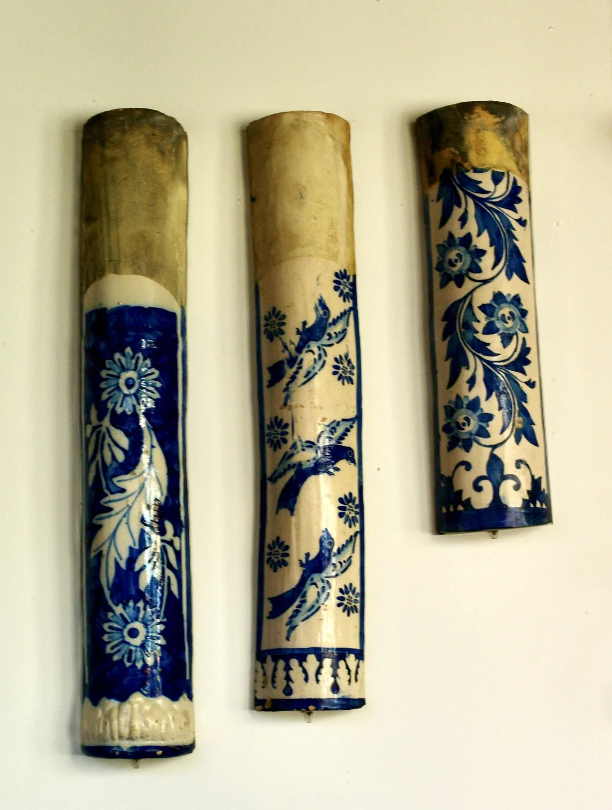

Elite Boardgamers
É para você?
Elite Boardgamers
É para você?
Azul 
vale a pena?
Sim. O jogo de azulejos que ganhou o Spiel des Jahres 2018 é uma das melhores portas de entrada para jogos modernos.
A resenha numa imagem
Como funciona, pontos fortes, pontos de atenção e ficha técnica, do jeito que saiu no Instagram. Abaixo, cada parte com fontes.
Abrir em tamanho cheio
Pegue   
Azulejos de verdade: a antiga estação de Aveiro, Portugal.
Premiado com
Spiel des Jahres 2018, As d'Or 2018, Deutscher Spiele Preis 2018, Golden Geek 2017 de Família, 2º no Golden Geek de Jogo do Ano, 2º em Arte e 3º em Estratégia.
O ponto dourado marca as vitórias. Fontes: Wikipedia (As d'Or, Deutscher Spiele Preis, Spiel des Jahres) e Consulta Golden Geek.Como funciona

Pegue
Todos de uma cor. De um expositor, ou do centro da mesa; o resto do expositor vai para o centro.
Ilustração Elite Boardgamers
Monte
As linhas de preparação. Cada linha do seu tabuleiro tem de 1 a 5 espaços e só aceita uma cor.
Foto: Pedro Ribeiro Simões, CC BY 2.0
Decore
A parede do palácio. Ao fim da rodada, cada linha completa manda um azulejo para a parede e pontua com os vizinhos.
Foto: Singa Hitam, CC BY 2.0
Feche
Uma fileira inteira. O jogo acaba; bônus por fileiras, colunas e cores completas decidem quem vence.
Foto: Art Prof, CC BY 2.0O que funciona muito bem
Aprende-se em minutos
Todas as resenhas consultadas destacam a regra curta: a ação é sempre pegar azulejos de uma cor, o que torna o jogo ótimo para apresentar a quem não joga.
Componentes que dão vontade de jogar
Os azulejos de resina e o visual inspirado nos azulejos portugueses são o elogio mais repetido entre as críticas (Board Game Quest, Wargamer, BoardGame Journey).

Decisões tensas em pouco tempo
Partidas de 30 a 45 minutos com escolhas que pesam: um mau draft nas rodadas finais pode custar muitos pontos, como observa a Board Game Quest.
Interação na medida certa
Dá para atrapalhar o adversário deixando sobras para ele. A There Will Be Games trata isso como o tempero do jogo.
Os númerosque importam
- 7,7Nota no BoardGameGeek, de 10 (cerca de 111 mil avaliações)
- 8,7Nota na Ludopedia, de 10
- 1,8Peso no BGG, de 5: leve
- 2–4Jogadores
- 30a 45 minutos por partida
- 8+Idade indicada
Números do BoardGameGeek e da Ludopedia obtidos por busca em 26/10/2026, porque os dois sites bloqueiam acesso automatizado. O peso varia de 1,76 a 1,8 conforme a fonte.
Antes de comprar
O tema importa no jogo?
Pouco. A crítica mais comum é que a história do palácio português não aparece na jogabilidade e o tema fica nos componentes (Board Game Quest, BoardGame Journey).
Dá para jogar sem atrapalhar ninguém?
Não muito. Forçar o adversário a pegar sobras é parte da estratégia, e a Wargamer avisa que essa maldade pode incomodar quem não espera por ela.
Tem modo solo?
Não. Azul é para 2 a 4 jogadores e não há regra solo na caixa.
As partidas mudam muito entre si?
Pouco. Não há cartas, objetivos ou setup variável no jogo-base. É uma observação nossa a partir das regras, não de uma crítica específica.
Para quem ele é?
Para quem quer um jogo bonito para levar a pessoas que não jogam, joga muito em casal ou gosta de jogos abstratos curtos e tensos.
Quando é melhor pensar duas vezes?
Se você busca imersão temática, não gosta de atrapalhar nem ser atrapalhado, ou quer jogar sozinho.
Azul é para você?
Responda às três perguntas.O resultado usa a ficha e os pontos de atenção desta resenha.
Ver outras resenhasVeredito
RecomendadoAzul merece os prêmios que ganhou: regra curtíssima, peças lindas e uma disputa que fica tensa rapidamente. O tema é só decoração e o jogo pode ser maldoso, mas como porta de entrada para jogos modernos é difícil achar algo melhor.
Fontes consultadas em 26/10/2026
- BoardGameGeek nota, avaliações, ano
- Bitewing Games peso BGG
- Ludopedia nota Ludopedia
- Board Game Quest tema, penalidades, componentes
- Wargamer interação, componentes
- There Will Be Games hate drafting
- BoardGame Journey tema
- Galápagos edição nacional
- Wikipedia designer, editora, prêmios